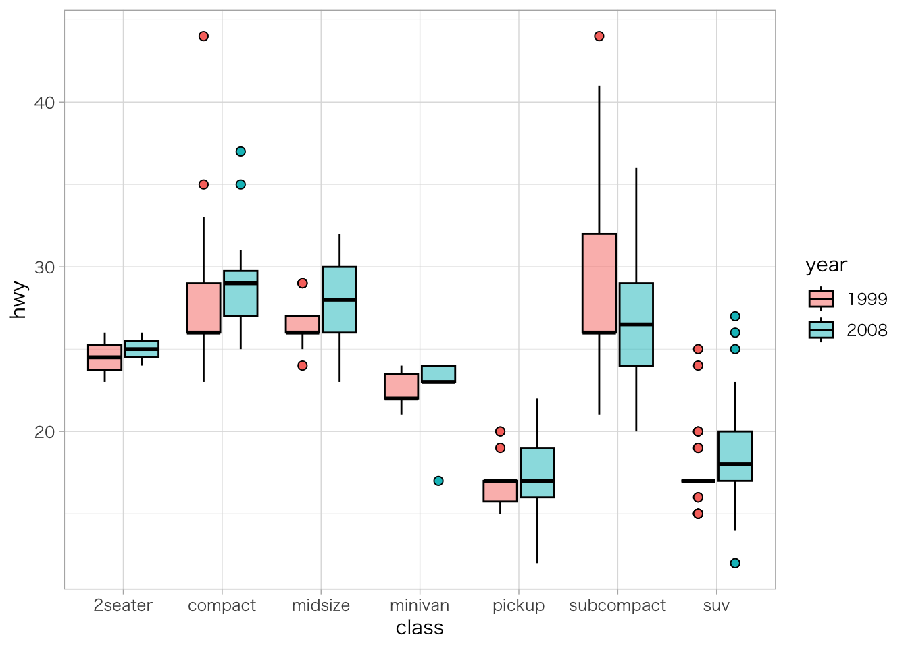
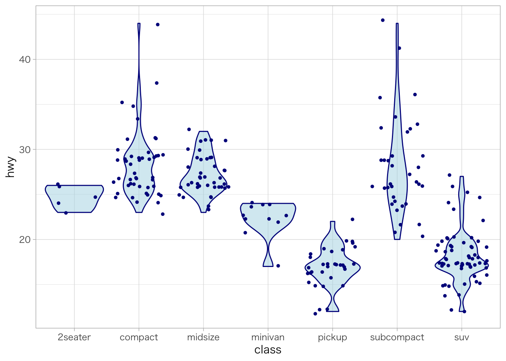

5 探索的データ分析
第5章「探索的データ分析（Exploratory Data Analysis）」では、データの内容を理解するための方法を解説します。これは、本格的な統計モデルを構築する方針を立てるための重要なプロセスです。
“R for Data Science”によれば、探索的データ分析は厳密なルールに基づく形式的なプロセスではなく、分析対象であるデータについて、
- 問いを提示する。
- 可視化、変換、モデル化により、問いに対する解を探る。
- 得た知見をもとに、問いを洗練させるか、新たな問いを提示する。
を繰り返すことであるとされています。
とはいえ、問いの立て方や解の考え方にはよく利用される手法があるため、それらを学んでおくことは有用です。
5.2 ggplot2の設定
## ggplotのテーマ設定（Excelのグラフと類似したテーマを選択）
theme_set(theme_light())
## Windowsにおけるggplot2の日本語フォント設定
windowsFonts("MEIRYO" = windowsFont("Meiryo UI"))
windowsFonts("YUGO" = windowsFont("Yu Gothic UI"))5.3 データの中身
まず、データが何を含んでいるかを確認します。
summary()関数は、各変数の記述統計量を出力する関数です。数値型の変数は、平均、中央値、最大値、最小値、四分位数を、文字列等のカテゴリカル変数は、要素毎のサンプル数が出力されます。
psych::describe()関数は、各変数の記述統計量や分布に関する情報を出力する関数です。平均、中央値、標準偏差に加え、刈り込み平均（trimmed）、中央絶対偏差（mad）、レンジ（最大値と最小値の差）、歪度（skew）、尖度（kurtosis）、標準誤差（se）が出力されます。
# データをコンソールに出力
diamonds## # A tibble: 53,940 x 10
## carat cut color clarity depth table price x y z
## <dbl> <ord> <ord> <ord> <dbl> <dbl> <int> <dbl> <dbl> <dbl>
## 1 0.23 Ideal E SI2 61.5 55 326 3.95 3.98 2.43
## 2 0.21 Premium E SI1 59.8 61 326 3.89 3.84 2.31
## 3 0.23 Good E VS1 56.9 65 327 4.05 4.07 2.31
## 4 0.29 Premium I VS2 62.4 58 334 4.2 4.23 2.63
## 5 0.31 Good J SI2 63.3 58 335 4.34 4.35 2.75
## 6 0.24 Very Good J VVS2 62.8 57 336 3.94 3.96 2.48
## 7 0.24 Very Good I VVS1 62.3 57 336 3.95 3.98 2.47
## 8 0.26 Very Good H SI1 61.9 55 337 4.07 4.11 2.53
## 9 0.22 Fair E VS2 65.1 61 337 3.87 3.78 2.49
## 10 0.23 Very Good H VS1 59.4 61 338 4 4.05 2.39
## # ... with 53,930 more rows# データの変数名を出力
colnames(diamonds)## [1] "carat" "cut" "color" "clarity" "depth" "table" "price"
## [8] "x" "y" "z"# データの記述統計量を出力
summary(diamonds)## carat cut color clarity depth
## Min. :0.2000 Fair : 1610 D: 6775 SI1 :13065 Min. :43.00
## 1st Qu.:0.4000 Good : 4906 E: 9797 VS2 :12258 1st Qu.:61.00
## Median :0.7000 Very Good:12082 F: 9542 SI2 : 9194 Median :61.80
## Mean :0.7979 Premium :13791 G:11292 VS1 : 8171 Mean :61.75
## 3rd Qu.:1.0400 Ideal :21551 H: 8304 VVS2 : 5066 3rd Qu.:62.50
## Max. :5.0100 I: 5422 VVS1 : 3655 Max. :79.00
## J: 2808 (Other): 2531
## table price x y
## Min. :43.00 Min. : 326 Min. : 0.000 Min. : 0.000
## 1st Qu.:56.00 1st Qu.: 950 1st Qu.: 4.710 1st Qu.: 4.720
## Median :57.00 Median : 2401 Median : 5.700 Median : 5.710
## Mean :57.46 Mean : 3933 Mean : 5.731 Mean : 5.735
## 3rd Qu.:59.00 3rd Qu.: 5324 3rd Qu.: 6.540 3rd Qu.: 6.540
## Max. :95.00 Max. :18823 Max. :10.740 Max. :58.900
##
## z
## Min. : 0.000
## 1st Qu.: 2.910
## Median : 3.530
## Mean : 3.539
## 3rd Qu.: 4.040
## Max. :31.800
## # データの記述統計量や分布に関する情報を出力
psych::describe(diamonds)## vars n mean sd median trimmed mad min max
## carat 1 53940 0.80 0.47 0.70 0.73 0.47 0.2 5.01
## cut* 2 53940 3.90 1.12 4.00 4.04 1.48 1.0 5.00
## color* 3 53940 3.59 1.70 4.00 3.55 1.48 1.0 7.00
## clarity* 4 53940 4.05 1.65 4.00 3.91 1.48 1.0 8.00
## depth 5 53940 61.75 1.43 61.80 61.78 1.04 43.0 79.00
## table 6 53940 57.46 2.23 57.00 57.32 1.48 43.0 95.00
## price 7 53940 3932.80 3989.44 2401.00 3158.99 2475.94 326.0 18823.00
## x 8 53940 5.73 1.12 5.70 5.66 1.38 0.0 10.74
## y 9 53940 5.73 1.14 5.71 5.66 1.36 0.0 58.90
## z 10 53940 3.54 0.71 3.53 3.49 0.85 0.0 31.80
## range skew kurtosis se
## carat 4.81 1.12 1.26 0.00
## cut* 4.00 -0.72 -0.40 0.00
## color* 6.00 0.19 -0.87 0.01
## clarity* 7.00 0.55 -0.39 0.01
## depth 36.00 -0.08 5.74 0.01
## table 52.00 0.80 2.80 0.01
## price 18497.00 1.62 2.18 17.18
## x 10.74 0.38 -0.62 0.00
## y 58.90 2.43 91.20 0.00
## z 31.80 1.52 47.08 0.005.4 データの分布
次に、データに含まれる変数がどのように分布しているかを、ggplot2パッケージの関数を使用して可視化します。
5.4.1 離散型変数の度数分布
離散型変数の度数分布を出力するにはdplyr::count()関数を使用します。
diamonds %>%
dplyr::count(cut)## # A tibble: 5 x 2
## cut n
## <ord> <int>
## 1 Fair 1610
## 2 Good 4906
## 3 Very Good 12082
## 4 Premium 13791
## 5 Ideal 21551離散型変数の度数分布を可視化するには、頻度棒グラフを使用します。
diamonds %>%
ggplot(mapping = aes(x = cut)) +
geom_bar()
連続型変数の度数分布
連続型変数の度数分布を出力するには、dplyr::count()関数とggplot2::cut_width()関数を使用します。
diamonds %>%
dplyr::count(ggplot2::cut_width(carat, 0.5))## # A tibble: 11 x 2
## `ggplot2::cut_width(carat, 0.5)` n
## <fct> <int>
## 1 [-0.25,0.25] 785
## 2 (0.25,0.75] 29498
## 3 (0.75,1.25] 15977
## 4 (1.25,1.75] 5313
## 5 (1.75,2.25] 2002
## 6 (2.25,2.75] 322
## 7 (2.75,3.25] 32
## 8 (3.25,3.75] 5
## 9 (3.75,4.25] 4
## 10 (4.25,4.75] 1
## 11 (4.75,5.25] 1連続型変数の度数分布を可視化するには、ヒストグラムを使用します。
diamonds %>%
ggplot(mapping = aes(x = carat)) +
geom_histogram(binwidth = 0.5)
連続型変数の度数分布をグループ別に可視化するには、geom_freqpoly()関数を使用します。
diamonds %>%
ggplot(mapping = aes(x = carat, color = cut)) +
geom_freqpoly(binwidth = 0.1)
連続型変数の度数を標準化して密度をグループ別に可視化するには、mapping = aes(y = ..density..)を指定して、geom_fredpoly()関数を使用します。
diamonds %>%
ggplot(mapping = aes(x = price, y = ..density.., color = cut)) +
geom_freqpoly(binwidth = 500)
外れ値
外れ値や異常値を可視化するにはヒストグラムを使用し、coord_cartesian()関数のylim引数にY軸の下限・上限値を指定して、Y軸方向に図表を拡大します。
なお、scale_y_continuous()関数のlimits引数に下限・上限を指定する方法でもY軸の表示範囲を変えることができますが、下限・上限の範囲外にあるデータが表示されなくなるため、単に拡大するだけであればcoord_cartesian()関数を用いるほうが良いでしょう。
diamonds %>%
ggplot(mapping = aes(x = y)) +
geom_histogram() +
coord_cartesian(ylim = c(0, 50))## `stat_bin()` using `bins = 30`. Pick better value with `binwidth`.
グループ別に外れ値を可視化する場合は、箱ひげ図を使用します。
diamonds %>%
ggplot(mapping = aes(x = cut, y = carat)) +
geom_boxplot()
5.5 データの関係性
データに含まれる変数が互いにどのような関係にあるかを、ggplot2パッケージの関数を使用して可視化します。
離散型変数の関係性
離散型変数の観測値の組み合わせの分布を可視化するには、geom_count()関数の頻度バブルチャートや、geom_tile()関数のヒートマップを使用します。
diamonds %>%
ggplot(mapping = aes(x = cut, y = color)) +
geom_count()
diamonds %>%
dplyr::count(cut, color) %>%
ggplot(mapping = aes(x = cut, y = color, fill = n)) +
geom_tile()
連続型変数の関係性
連続型変数の観測値の組み合わせの分布を可視化するには、geom_point()関数の散布図や、geom_bin2d()関数、geom_hex()関数のヒートマップを使用します。特にデータサイズが大きい場合は、geom_point()関数の実行に時間がかかるため、geom_bin2d()関数やgeom_hex()関数を用いるのが効果的です。
diamonds %>%
ggplot(mapping = aes(x = carat, y = price)) +
geom_point(alpha = 0.05)
diamonds %>%
ggplot(mapping = aes(x = carat, y = price)) +
geom_bin2d(bins = 100) # X軸・Y軸の階級数（デフォルトは30）
diamonds %>%
ggplot(mapping = aes(x = carat, y = price)) +
geom_hex(bins = 50) # X軸・Y軸の階級数（デフォルトは30）